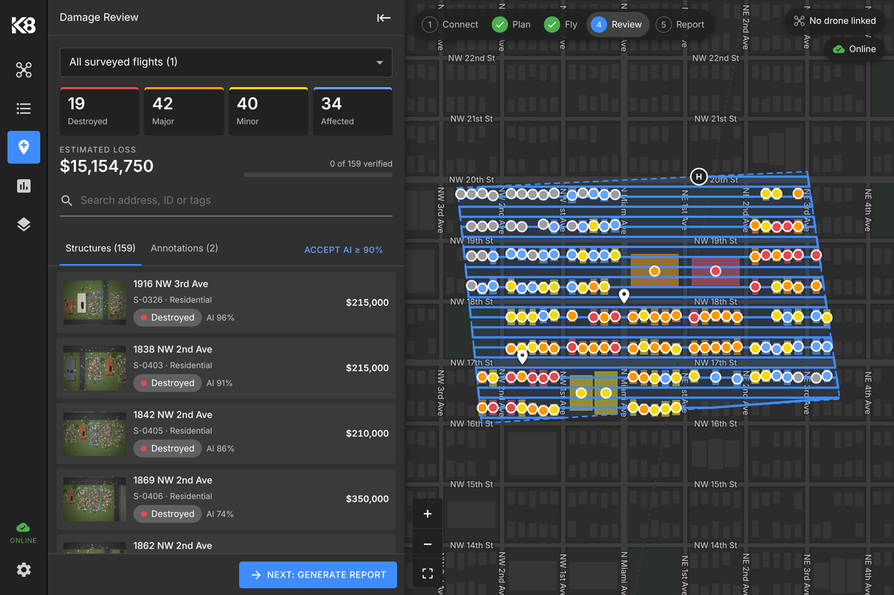
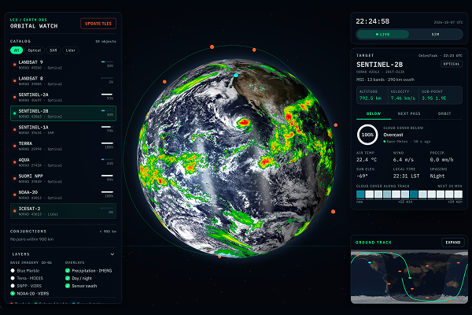
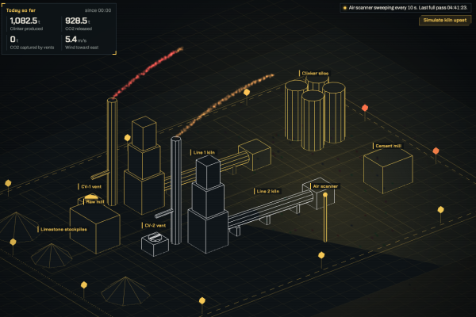
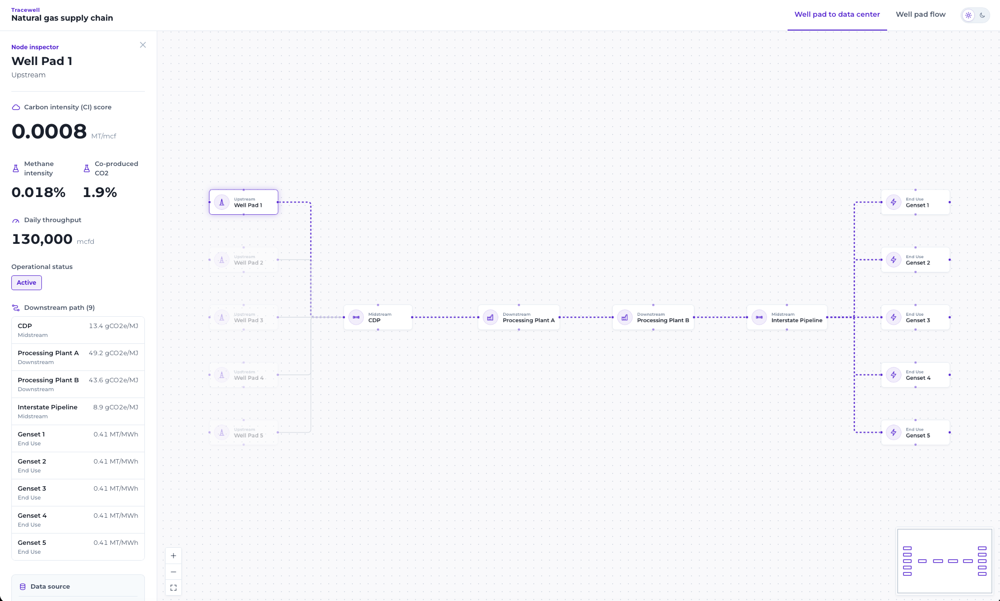
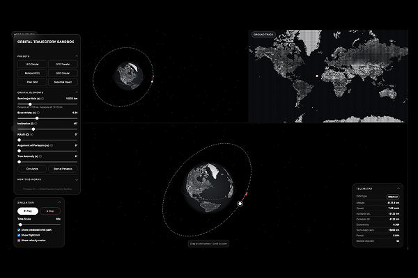

Kalibr8 (K8)
An offline-first field tool that takes disaster-relief drone pilots from autonomous survey to FEMA damage report.
Static screens lie. I use AI-assisted coding to move rapidly out of Figma and into the browser. These builds live directly on GitHub as functioning HTML, CSS, and JavaScript—stress-testing UI logic and interactions in real-world environments before a single engineering ticket is written.

An offline-first field tool that takes disaster-relief drone pilots from autonomous survey to FEMA damage report.

A 3D web application that tracks real-time satellite orbits and telemetry.

An AI copilot that answers production and compliance questions from plant records while monitoring emissions.

An interactive map of the natural gas supply chain.

An interactive 3D sandbox for exploring how orbital elements shape a satellite's trajectory in real time.
If you need to know whether an idea works before you commit engineering time to it, this is exactly the kind of thing I like building.
Get in touch